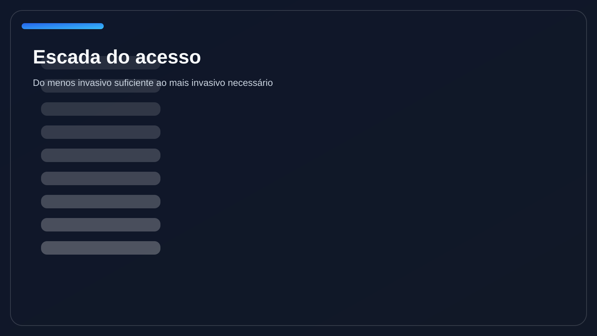
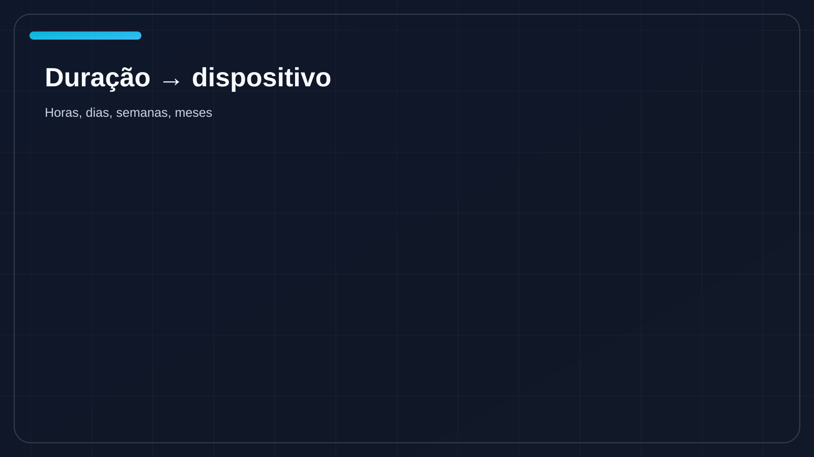
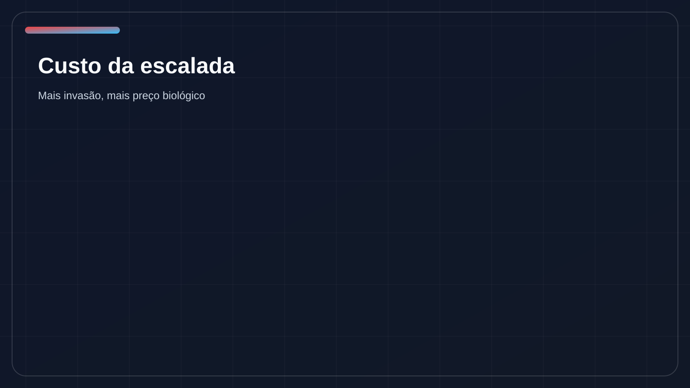
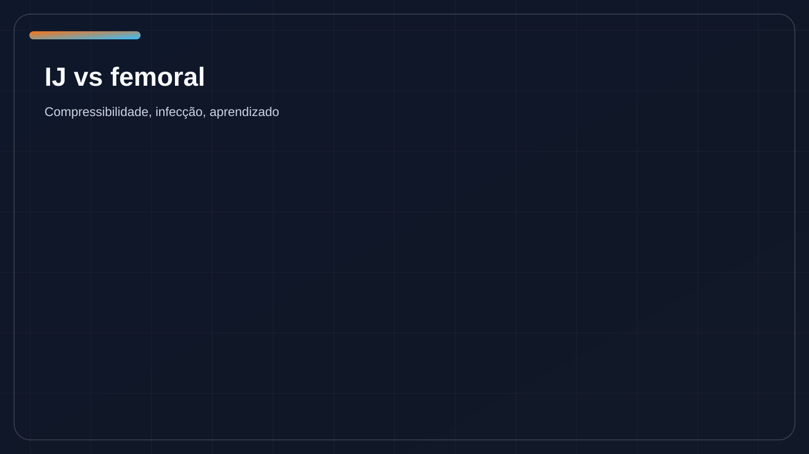
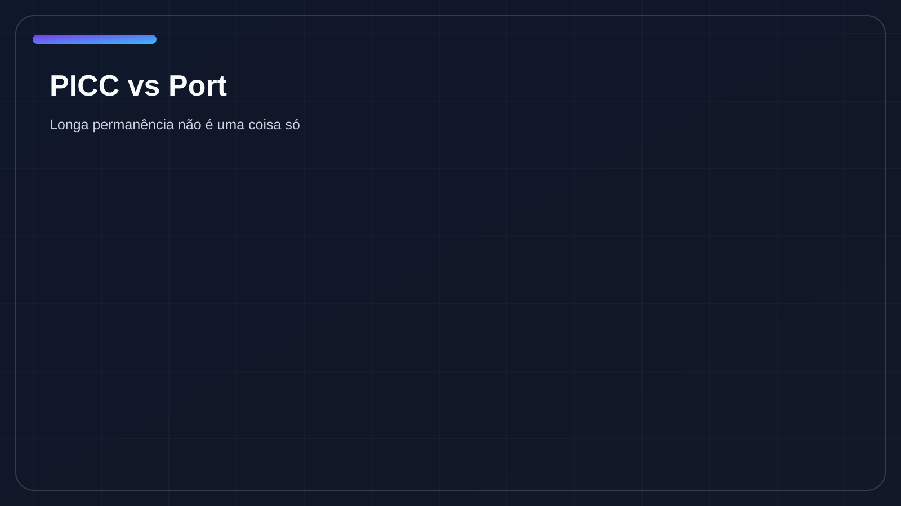
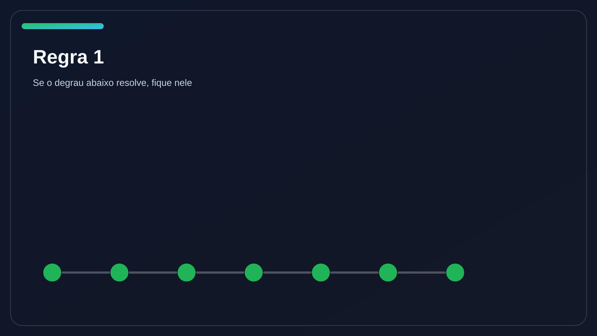

Part 2 MasterclassAbrir plano
Escada do Acesso — versão overkill
Segunda de cinco partes do aprofundamento: mais mídia, mais comparadores, mais MCQs, mais pegadinhas e mais algoritmos para o aluno parar de escalar como quem joga dado.
Segunda de cinco partes do aprofundamento: mais mídia, mais comparadores, mais MCQs, mais pegadinhas e mais algoritmos para o aluno parar de escalar como quem joga dado.





